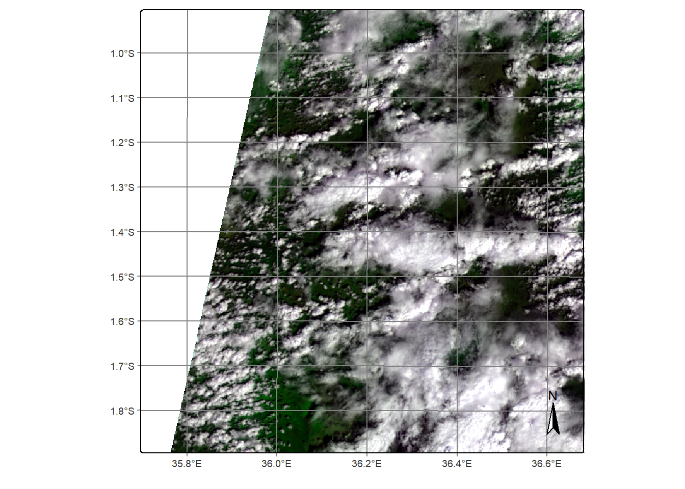
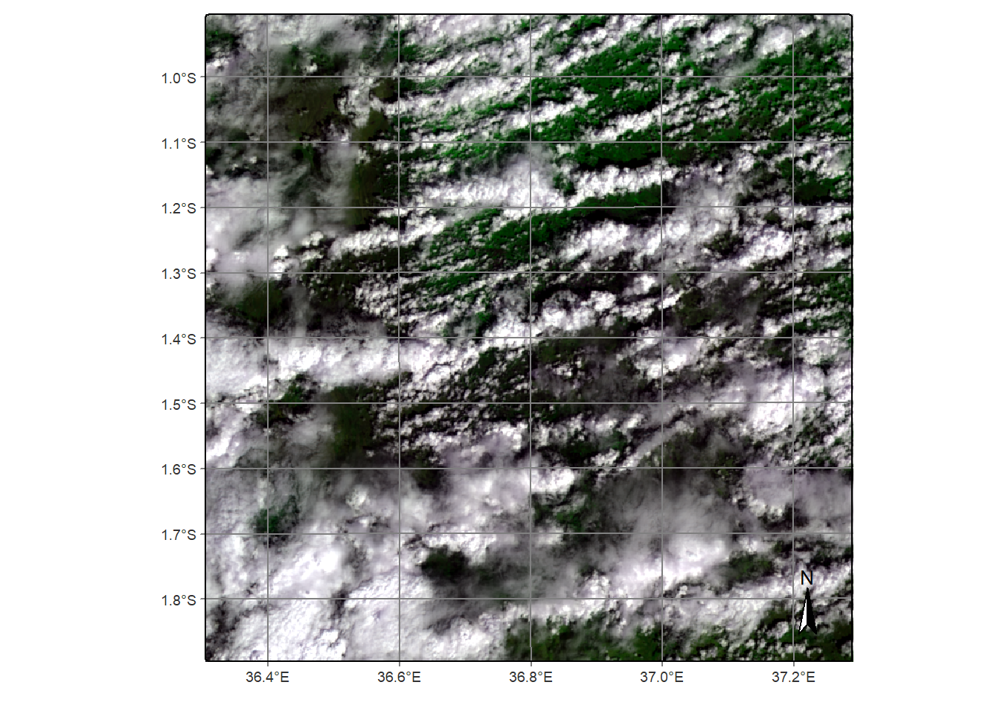
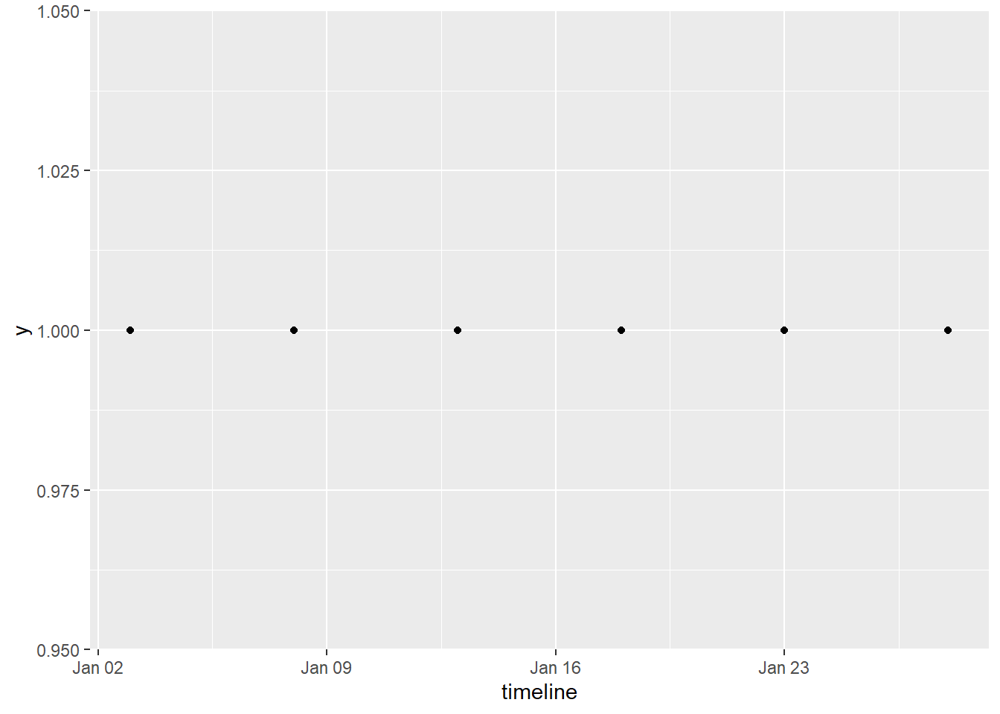
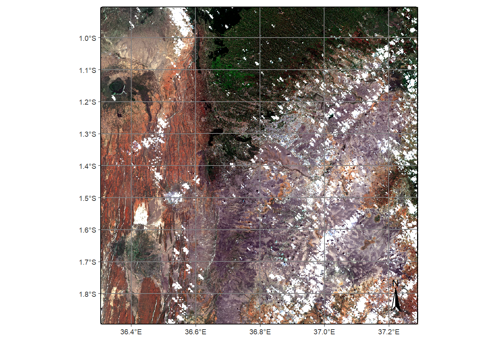
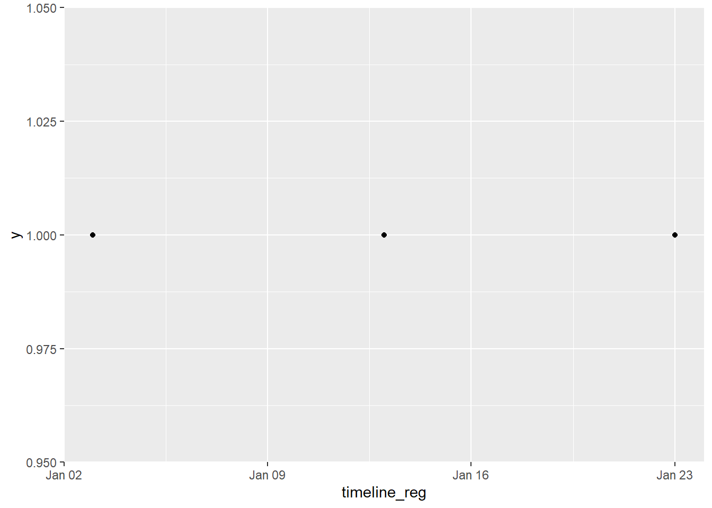
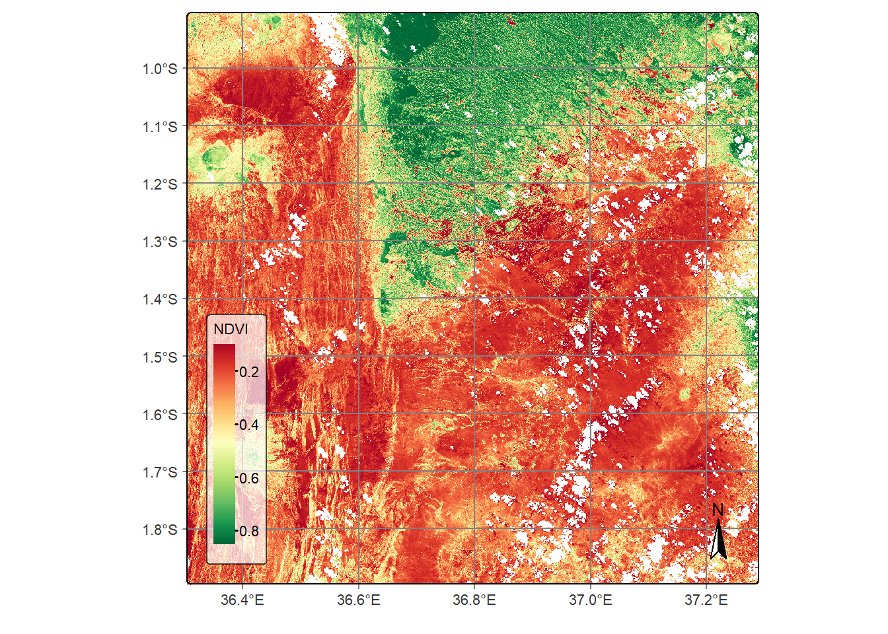
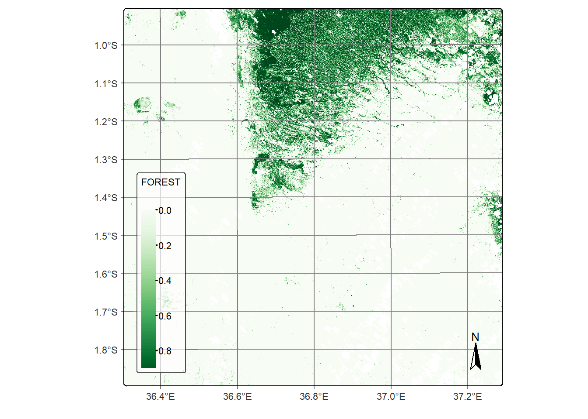
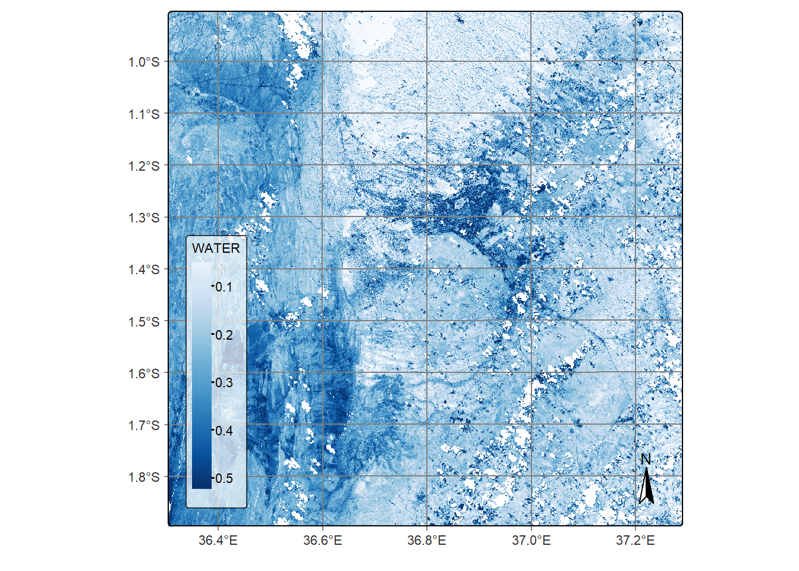
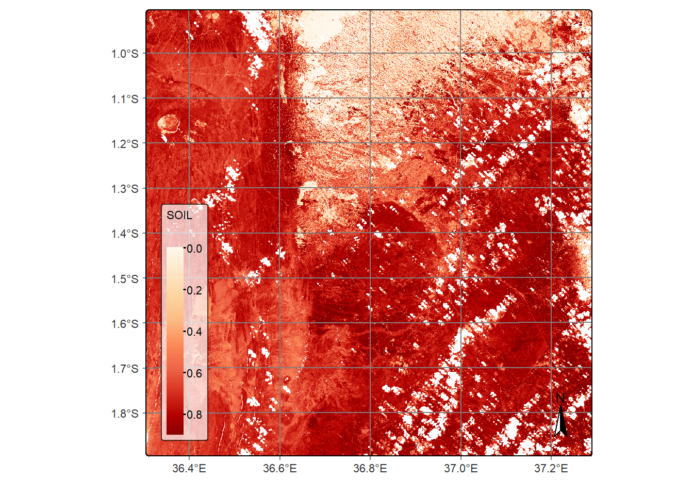

Data Cubes
Michael Wellington
2024-07-01
Earth Observation Data Cubes
The SITS package implements a concept of data cubes to store and deal with data in space and time. This is not to be confused with the Open Data Cube, which is a broader way of organising Earth Observation data on which Digital Earth Africa is implemented.
In the last script, we loaded Digital Earth Africa Sentinel-2 data
using the sits_cube() function which returned a data cube,
stored locally in our R environment. This script will further explore
data cubes objects and conducting operations on them.
To begin, packages are loaded.
library(sf)
library(terra)
library(sits)
library(rstac)
library(parallel)
library(tidyverse)Load a Sentinel-2 data cube
Sentinel-2 images for an area around the Kenyan capital, Nairobi, is loaded and stored as a data cube object. We can plot the first image in the series, noting that it is cloudy.
dea_s2_cube <- sits_cube(
source = "DEAFRICA",
collection = "SENTINEL-2-L2A",
roi = c(
lon_min = 36.65, lat_min = -1.48,
lon_max = 36.95, lat_max = -1.18
),
bands = c(
"B02", "B03", "B04",
"B05", "B06", "B07",
"B08", "B8A", "B11",
"B12", "CLOUD"
),
start_date = "2023-01-01",
end_date = "2023-01-31"
)## | | | 0% | |=================================== | 50% | |======================================================================| 100%plot(dea_s2_cube, red = "B04", blue = "B02", green = "B08")## Warning: [minmax] min and max values not available for all layers. See
## 'setMinMax' or 'global'
Inspecting the data cube object, below, shows that two tiles have been returned. We can check the tiles to see their extent.
dea_s2_cube## # A tibble: 2 × 12
## source collection satellite sensor tile xmin xmax ymin ymax crs
## <chr> <chr> <chr> <chr> <chr> <dbl> <dbl> <dbl> <dbl> <chr>
## 1 DEAFRICA SENTINEL-2-… SENTINEL… MSI 37MBU 199980 309780 9.79e6 9.90e6 EPSG…
## 2 DEAFRICA SENTINEL-2-… SENTINEL… MSI 36MZD 799980 909780 9.79e6 9.90e6 EPSG…
## # ℹ 2 more variables: labels <list>, file_info <list>plot(dea_s2_cube %>% filter(tile=='36MZD'), red = "B04", blue = "B02", green = "B08")## Warning: [minmax] min and max values not available for all layers. See
## 'setMinMax' or 'global'
plot(dea_s2_cube %>% filter(tile=='37MBU'), red = "B04", blue = "B02", green = "B08")## Warning: [minmax] min and max values not available for all layers. See
## 'setMinMax' or 'global'
We can see that tile 37MBU covers the entire extent, so
we will use that tile. It is selected in the line of code below.
dea_s2_cube <- dea_s2_cube %>% filter(tile=='37MBU')Regularising the data cube
Plotting the timeline below shows the time series looks quite regular, which should be expected given regular overpass dates of Sentinel-2.
timeline <- sits_timeline(dea_s2_cube)
ggplot() + geom_point(aes(x=timeline, y=1)) To regularise the data cube, we must set the number of cores available for parallel computing. The function below returns the total number of cores available. Best performance is normally achieved by setting a value below this.
detectCores()## [1] 8The function below regularises the data cube to 20-m resolution and 10 day frequency.
This can take some time to run.
dea_s2_cube_reg <- sits_regularize(
output_dir = tempdir(), # directory for storing regularised output
cube = dea_s2_cube, # raster cube object to regularise
res = 20, # 20m spatial resolution
period = "P10D", # time period
multicores = 4 # number of cores
)## | | | 0% | |== | 3% | |===== | 7% | |======= | 10% | |========= | 13% | |============ | 17% | |============== | 20% | |================ | 23% | |=================== | 27% | |===================== | 30% | |======================= | 33% | |========================== | 37% | |============================ | 40% | |============================== | 43% | |================================= | 47% | |=================================== | 50% | |===================================== | 53% | |======================================== | 57% | |========================================== | 60% | |============================================ | 63% | |=============================================== | 67% | |================================================= | 70% | |=================================================== | 73% | |====================================================== | 77% | |======================================================== | 80% | |========================================================== | 83% | |============================================================= | 87% | |=============================================================== | 90% | |================================================================= | 93% | |==================================================================== | 97% | |======================================================================| 100%Following this procedure, we can inspect the first image in the time series and note that cloud masking has been applied.
dea_s2_cube_reg %>%
dplyr::filter(tile == "37MBU") %>%
plot(red = "B04", blue = "B02", green = "B03")## Warning: [minmax] min and max values not available for all layers. See
## 'setMinMax' or 'global'
timeline_reg <- sits_timeline(dea_s2_cube_reg)
ggplot() + geom_point(aes(x=timeline_reg, y=1))
Calculating band indices
Now that the data cube is regularised, we can perform analysis and implement workflows like classification.
Below, NDVI is calculated and plotted.
reg_cube <- sits_apply(dea_s2_cube_reg,
NDVI = (B08 - B04) / (B08 + B04),
output_dir = tempdir()
)
plot(reg_cube, band = "NDVI", palette = "RdYlGn")
Spectral mixture analysis
Mixed pixels contain a variety of spectral responses from different land use/land cover types (e.g. forest, grassland, water). If the spectral response of a pure land cover class is known (the value is called an endmember), mixture analysis provides a means to estimate the proportions of each land cover class in a pixel.
em <- tibble::tribble(
~class, ~B02, ~B03, ~B04, ~B8A, ~B11, ~B12,
"forest", 200, 352, 189, 2800, 1340, 546,
"soil", 400, 650, 700, 3600, 3500, 1800,
"water", 700, 1100, 1400, 850, 40, 26
)
# Generate the mixture model
reg_cube <- sits_mixture_model(
data = reg_cube,
endmembers = em,
multicores = 4,
memsize = 12,
output_dir = tempdir()
)## | | | 0% | |======================= | 33% | |=============================================== | 67% | |======================================================================| 100%plot(reg_cube, band = "FOREST", palette = "Greens")
plot(reg_cube, band = "WATER", palette = "Blues")
plot(reg_cube, band = "SOIL", palette = "OrRd")
Conclusion
We can see that the SITS package makes it easy to create and perform operations on data cubes using data from Digital Earth Africa. Next, we’ll see how the package can be used for classification.